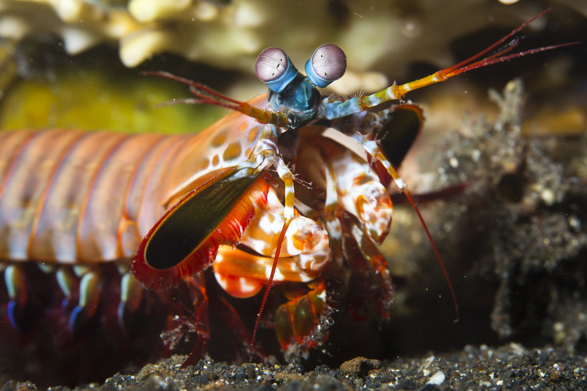

Sobre
Stomatopoda (ou estomatópode) nome científico Odontodactylus scyllarus, chamados popularmente de tamarutacas ou de lacraias-do-mar no Brasil, é uma ordem de crustáceos marinhos da subclasse Hoplocarida, que agrupa cerca de 400 espécies, caracterizadas principalmente pela morfologia da segunda pata torácica, que é modificada em apêndice subquelado, lembrando uma pata de louva-a-deus.[2]

| Reino | Filo | Subfilo | Classe | Subclasse | Orderm |
|---|---|---|---|---|---|
| Animalia | Anthropoda | Crustacea | Malacostraca | Hoplocarida | Stomatopoda |